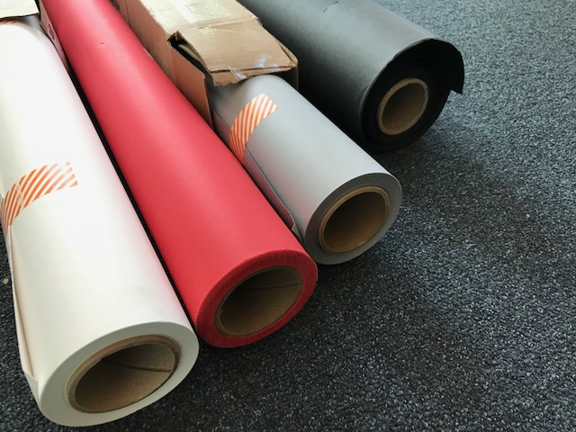

6.810 Engineering Interactive Technologies (fall 2021)
Lab 14: Taking Photos
In this lab, you will take photos with differently colored backdrops.
Steps:
Deliverables
At the end of the lab, upload to your student google drive:
5 photos of your multi-touch pad: each photo should show the printed multi-touch pad, at least one finger touching the multi-touch pad, and either the signal visualization. blob detection, or your custom application on a screen), photos should have at least two different backgrounds (e.g. gray, red) and should be taken from different angles
Help us Improve Class Materials for Lab14:
Please let us know if you had any trouble with the photo taking or if anything was confusing in the write up.
You can add your comments here.
(1) Take Photos
How to Take a Photo with a Clean Background
A professional looking photo will make your work look so much better when you put it on your website or project portfolio.
Please don't underestimate how important professional presentation is.
Recruiters have only a few minutes or less to do a skim over the first round of applications, and having a high quality presentation of your work is super valuable at this point.
The tutorial below will show images from the old multitouch pad that we made in class in previous years but the steps are the same. The old multi-touch pad was based on FTIR (light bouncing inside of acrylic to find touch points) but we upgraded this to capacitive touch pads this year since that's what's actually used in consumer hardware.
Backdrops
To be able to get a nice homogeneous background, we use something that is called a backdrop.
It is basically just a long roll of colored paper that we tape to the wall and then place whatever we want to take a photo of on it.
Here is how the setup looks like.
You can buy backdrops in many different stores.
We bought most of our backdrops here from amazon (Savage Seamless Background Paper - # Super White, #32 Light Gray (53" x 36'), or Black).
They cost about $50 per roll, and a roll lasts forever.

We already set up a few tables at the IDC, so you can just come in and use the backdrops we already set up on the tables.
In case there is not enough space available, you can also create a new backdrop setup by simply cutting off a piece from the roll that is long enough to cover your photo area.
Remember, it's just cardboard, so it's not a huge deal if you need to cut one more piece.
Taking the Photos

These are some images I snapped with my iPhone in my office using the setup you see above.
It is worth taking a moment to think about which one you like most and why.
For instance, some images have the laptop further back and the touchpad in the front, some have it reversed.
Which arrangement would you use for your touchpad?
Deliverables
At the end of the lab, upload to your student google drive:
5 photos of your multi-touch pad: each photo should show the printed multi-touch pad, at least one finger touching the multi-touch pad, and either the signal visualization. blob detection, or your custom application on a screen), photos should have at least two different backgrounds (e.g. gray, red) and should be taken from different angles
5 photos of your multi-touch pad: each photo should show the printed multi-touch pad, at least one finger touching the multi-touch pad, and either the signal visualization. blob detection, or your custom application on a screen), photos should have at least two different backgrounds (e.g. gray, red) and should be taken from different anglesPlease let us know if you had any trouble with the photo taking or if anything was confusing in the write up.
You can add your comments here.
5 photos of your multi-touch pad: each photo should show the printed multi-touch pad, at least one finger touching the multi-touch pad, and either the signal visualization. blob detection, or your custom application on a screen), photos should have at least two different backgrounds (e.g. gray, red) and should be taken from different angles